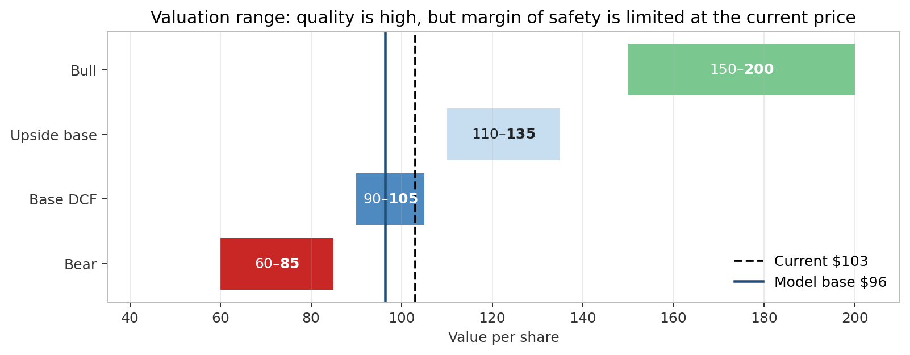
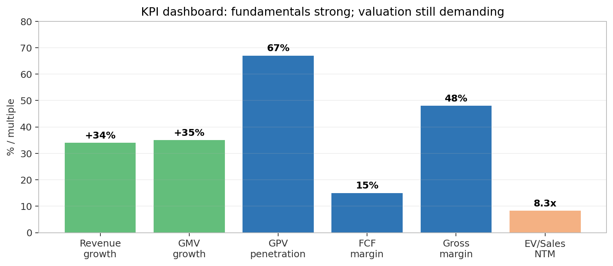
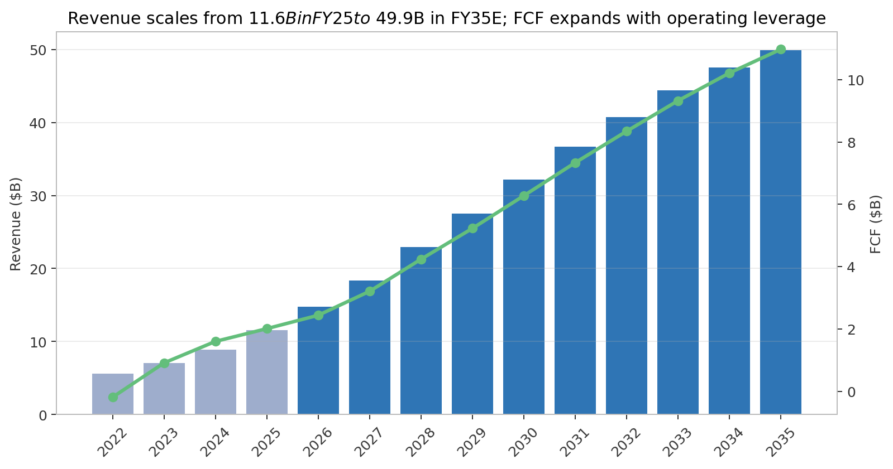
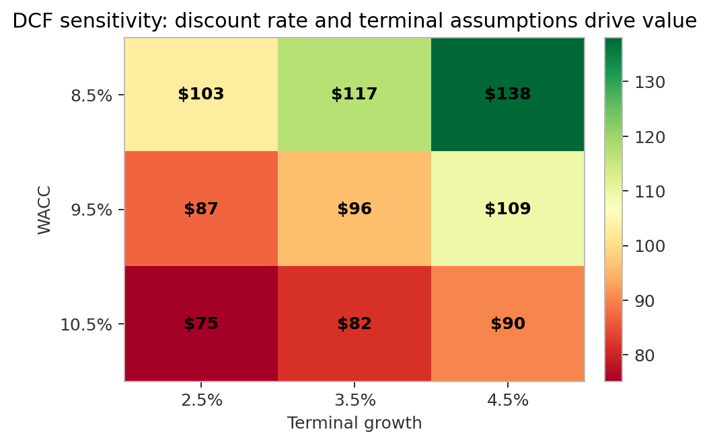
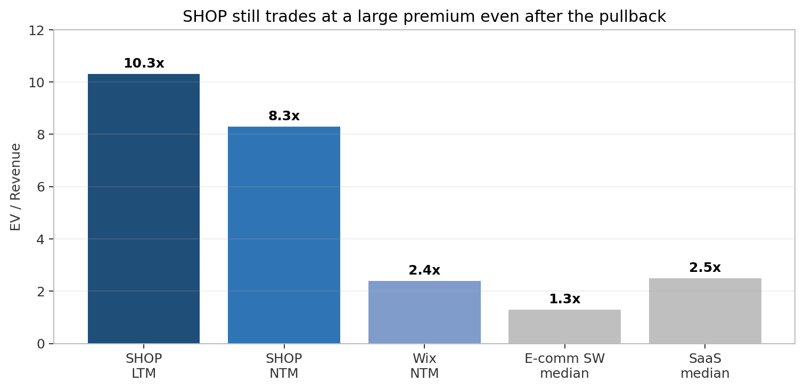

Shopify Inc. (SHOP)
Investment Committee Presentation
Neutral / Accumulate on pullbacks — exceptional company, valuation still requires proof that 20%+ growth and margin expansion persist
Reference price
$103
Koyfin / model
Model DCF value
$96
model.xlsx DCF!B107
Implied downside
-6.5%
model.xlsx DCF!B109
Market cap / EV
$134B / $128B
Koyfin / model
IC recommendation: own the work, wait for either a better entry or proof of reacceleration
SHOP Valuation & Stance
Recommendation
Neutral
Accumulate on pullbacks below ~$90
Base DCF
~$96/share
9.5% WACC; 3.5% terminal g
Upside setup
$110–150+
Requires growth reacceleration
Main concern
Valuation
8.3x NTM EV/sales; 44x EV/EBITDA
- Business quality is not the debate: Shopify is scaled, founder-led, asset-light and deeply embedded in merchant workflows.
- Fundamentals remain strong: Q1 revenue +34%, GMV +35%, FY2025 FCF $2.0B and net cash balance sheet.
- Valuation premium is demanding: The current multiple still prices in sustained 20%+ revenue growth and FCF margin expansion.
- IC action: Keep active coverage; add only on price weakness or evidence that growth/margins are tracking above base case.

Company snapshot: Shopify is a scaled commerce infrastructure platform, not just SMB store software
Platform Highlights
FY2025 GMV
$378B
Q1 2026 crossed $100B
FY2025 Revenue
$11.6B
+30% YoY growth
FY2025 FCF
$2.0B
17% FCF margin
Net Cash
~$5.6B
Minimal debt / highly liquid
Insider Ownership
~6%
Strong founder alignment

- Two revenue engines: High-margin Subscription Solutions plus GMV-linked Merchant Solutions.
- Flywheel attachment: Merchant Solutions is now ~76% of revenue, monetizing merchant success through Payments, Shop Pay, Capital, Shipping, and Markets.
- Core strategic pivot: From online storefront software to the operating system for independent commerce across online, offline (POS), B2B, and international.
Business model: subscription locks in the merchant; Merchant Solutions monetizes merchant success
Monetization Flywheel
More Merchants
(Acquisition / Subscriptions)
(Acquisition / Subscriptions)
→
More Surfaces
(Online / POS / B2B / AI)
(Online / POS / B2B / AI)
→
More Conversion
(Shop Pay / Catalog)
(Shop Pay / Catalog)
→
More GMV
(Scale Flywheel)
(Scale Flywheel)
→
More Merchant Solutions Attach
(Flywheel Monetization)
(Flywheel Monetization)
| Revenue stream | Q1 2026 revenue | Gross margin profile | Strategic role |
|---|---|---|---|
| Subscription Solutions | $750M / ~24% of revenue | ~80% | Merchant acquisition, platform control, Plus/enterprise upgrades |
| Merchant Solutions | $2.42B / ~76% of revenue | ~39% | GMV-linked monetization (payments, lending, shipping) and retention flywheel |
- Merchant Solutions gross margin of ~39% reflects the high mix of credit card processing fees, but drives massive operating cash flow dollars due to GMV scale.
Thesis pillars: five things must stay true for SHOP to compound through the multiple
Thesis Tracking Framework
| Pillar | Evidence today | KPI / breakpoint |
|---|---|---|
| Commerce OS | FY2025 GMV $378B; Q1 GMV $100.7B; broad app ecosystem | GMV growth; breakpoint <15% for 2+ quarters |
| Merchant Solutions flywheel | Merchant Solutions 76% of revenue; GPV penetration 67% | GPV penetration; breakpoint stalls <67% |
| Upmarket / B2B / international | Plus ~34% MRR; B2B +80–96%; international +mid-30s | Plus mix, B2B GMV, enterprise wins |
| FCF durability | FY2025 FCF $2.0B; Q1 FCF margin 15% | FCF margin; breakpoint <12% |
| AI option | UCP, Sidekick, Catalog, agentic storefronts | AI-referred GMV / monetization |
- IC framing: Thesis is intact today, but the premium valuation requires these key metrics to track at or above target levels to support the multiple.
Financial model: consensus supports 20%+ growth through FY2028; DCF assumes gradual fade and FCF margin expansion
Financial Projections & FCF Build

| Metric | FY2025 | FY2028E | FY2035E |
|---|---|---|---|
| Revenue ($B) | $11.6 | $22.9 | $49.9 |
| Growth | 30.0% | 25.0% | 5.0% |
| FCF margin | 17.4% | 18.5% | 22.0% |
| FCF ($B) | $2.0 | $4.2 | $11.0 |
- Base case uses Koyfin consensus for FY2026–FY2028, representing 28% growth in FY26 fading to 20% in FY29.
- Long-run value is highly dependent on FCF margins expanding to 22.0% as platform benefits from SG&A scale.
- SBC dilution is modeled as a cash-equivalent cost; share buybacks help offset dilution but do not eliminate it.
Valuation: model base is below current price; upside requires either duration, margin or discount-rate upside
DCF Valuation & Sensitivity Analysis
| DCF Bridge | Value ($M) / Share ($) |
|---|---|
| PV of Explicit FCF (10-Yr) | $39,700 |
| PV of Terminal Value | $80,000 |
| Enterprise Value | $119,600 |
| + Net Cash | $5,561 |
| Equity Value | $125,186 |
| Implied Value / Share | $96.30 |
- Model base: $96.30/share vs current $103.00 (implies -6.5% downside).
- Base Case CAPM: 9.5% WACC (adjusted beta 1.10, ERP 5.0%, risk-free 4.2%), 3.5% terminal growth rate.
- Practical range: <$85 is highly attractive; >$135 requires assuming bull-case growth duration.

- WACC and terminal growth drive massive value swing: a 100bps WACC reduction raises value by >$20/share.
Multiple sanity check: SHOP deserves a premium, but the premium is still the key risk
Comparable Multiples

| Multiple | SHOP Current | SaaS Median |
|---|---|---|
| EV / Sales LTM | 10.3x | 3.0x |
| EV / Sales NTM | 8.3x | 2.5x |
| EV / EBITDA NTM | 44.4x | 16.0x |
| P / E NTM | 54.5x | 24.0x |
| Street Avg Target | $151.11 | N/A |
- SHOP justifies a premium based on scale, ecosystem lock-in, and payments monetization, but the current premium is very high.
- Multiple compression remains the main downside risk if forward guidance suggests growth is slipping below 20%.
Competitive position: Shopify wins on merchant alignment, ecosystem breadth and unified commerce
Competitive Landscape
| Competitor set | Where they compete | SHOP counter-positioning |
|---|---|---|
| Amazon / Marketplaces | Demand capture and fulfillment | Shopify preserves merchant brand control, customer relationship data, and channel independence. |
| Woo / Wix / Squarespace | SMB storefront creation | Shopify offers a vastly superior commerce stack, integrated payments (Shop Pay), and a scaling enterprise path. |
| BigCommerce | Mid-market / B2B segment | Shopify has a larger third-party app ecosystem, higher checkout conversion, and broader Merchant Solutions. |
| Adobe / Salesforce | Complex enterprise commerce | Shopify offers faster implementation and lower total cost of ownership (TCO), though must prove enterprise complexity. |
| Stripe / PayPal / Block | Payments & POS economics | Shopify embeds payments in its merchant OS; transactional take-rate dependencies and concentration remain. |
- Moat Source: High switching costs, unified commerce integrations, and incentives aligned with merchant GMV success rather than competing with them.
Catalysts: next 6–12 months should clarify whether deceleration fears are overdone
Catalyst Calendar
| Catalyst | Window | Bull signal | Bear signal |
|---|---|---|---|
| Q2 2026 earnings | Early Aug 2026 | Revenue > guide; GMV resilient; FCF margin in mid/high teens | In-line growth with margin pressure; weak Q3 forward guidance |
| AI / agentic disclosures | 2026–2027 | AI-referred GMV disclosed; Shopify captures checkout/payments | Traffic gains without monetization; third-party AI agents bypass store checkout |
| Payments penetration | Quarterly | GPV penetration tracks toward 70–75% | GPV penetration stalls at or below 67%; take-rate compression |
| B2B / enterprise | Quarterly | Significant enterprise client wins; B2B GMV maintains +50% growth | B2B segment growth slows; Adobe/Salesforce defend enterprise turf |
| Buyback execution | 2026 | Outstanding share count stable/down; disciplined buybacks | Buybacks fail to offset high SBC dilution; share count rises |
| BNPL Regulation | H2 2026+ | Antitrust and BNPL credit inquiries contained | Forced payments interoperability; margins on Shop Pay Installments compress |
Risks and kill criteria: the thesis breaks if growth slows before margins scale
Risk & Monitor Register
| Risk | Why it matters | Watch item / kill criterion |
|---|---|---|
| Growth deceleration | Premium multiple requires long growth duration | Revenue <20% or GMV <18% for multiple consecutive quarters |
| Merchant Solutions margin drag | Lower-margin transaction revenue can cap FCF margins | Gross margin slips below 45% or payment transaction losses rise |
| AI disintermediation | Walled garden AI assistants could bypass storefronts | AI traffic grows but Shopify monetization remains absent |
| Competition | Pressure across SMB, enterprise, POS, and payments | Enterprise adoption slows; GPV penetration stalls |
| Regulation / BNPL | Regulatory actions can impair credit/payments margins | Sezzle case expanded or forced payments interoperability |
| SBC dilution | Per-share metrics matter more than absolute cash flow | SBC stays >5% of revenue and buyback is insufficient to offset |
- Position sizing should reflect asymmetric multiple risk: downside is primarily multiple compression, not balance sheet distress.
IC decision: keep on active watch; require either price discipline or KPI confirmation
Investment Committee Verdict
Decision
Do not initiate full position
Valuation lacks margin of safety at ~$103
Entry Rule
Add below ~$90
Assuming core KPIs remain intact
Upgrade Rule
Buy on proof
Q2/Q3 show high-20s growth + FCF expansion
- What we like: Founder-led, dominant independent commerce OS, GMV-linked monetization, net cash balance sheet, positive FCF with multiple growth vectors.
- What holds us back: Base DCF is below current price, premium multiples (8.3x NTM sales, 44x EBITDA), gross margin pressure from Merchant Solutions mix, and AI disintermediation risk.
- Next steps: Maintain active coverage, update models after Q2 earnings, and track KPI dashboard and valuation bands.
End / Q&A
Source run: 2026-05-23-initial-coverage